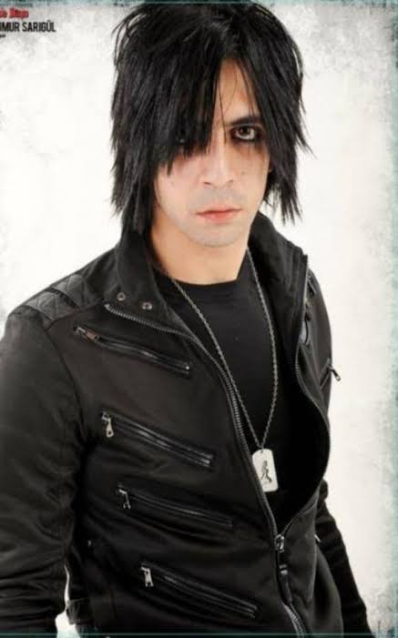
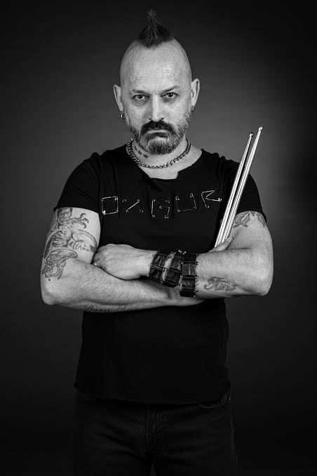

Grup Manga Kimdir?
maNga, Ankara kökenli bir alternatif rock grubudur.
Gurubun Tarihi
maNga’nın hikayesi, 2001 yılının sonlarına doğru Yağmur Sarıgül’ün barlarda “cover” parçaları yorumlayıp eğlendikleri gruptan ayrılmasıyla başladı. Rock müzikle elektroniği, sert gitar riffleriyle rap vokalleri birleştirebileceği bir grup kurmak isteyen Sarıgül öncelikle okuldan arkadaşı Orçun Şekerusta ’yı , sonrasında Özgür Can Öney , Efe Yılmaz ve Ferman Akgül ’ün gruba dahil
etti.Sonrasında Orçun'un gruptan aurılmasıyla Cem Bahtiyar gruba dahil olmuştur.Sonrasında ise grubun eski albümlerinde ki elektronik ses efektlerini yapan Efe Yılmaz 2013 yılında gruptan ayrılmıştır ve maNga grubu şuanki yapısına kavuşmuştur. MaNga grubunun o zamanki tarzı “nu metal” ve “hardcore” du. Eylül 2001 de Ferman’ın “Sing your Song” yarışmasına katılma fikriyle albüm maceraları başlamış oldu.
Ferman Akgül
maNga grubunun solistidir
Doğum tarihi: 25 Aralık 1979
Doğum yeri: Ankara
Gruba katılım: 2001

Yağmur Sarıgül
maNga grubunun gitaristidir
Doğum tarihi: 26 Ağustos 1979
Doğum yeri: Antalya
Gruba katılım: 2001
Cem Bahtiyar
maNga grubunun bas gitaristidir
Doğum tarihi: 18 Ocak 1979
Doğum yeri: Denizli
Gruba katılım: 2002

Özgür Can Öney
maNga grubunun davulcusudur
Doğum tarihi: 21 Temmuz 1980
Doğum yeri: Ankara
Gruba katılım: 2001
Müzik
değişiyor